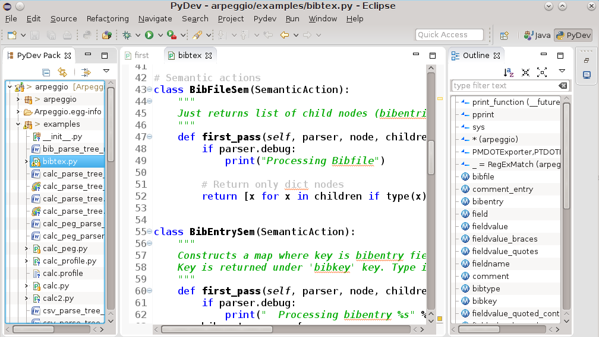
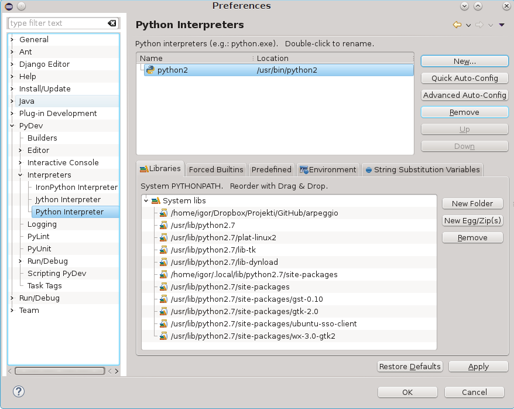
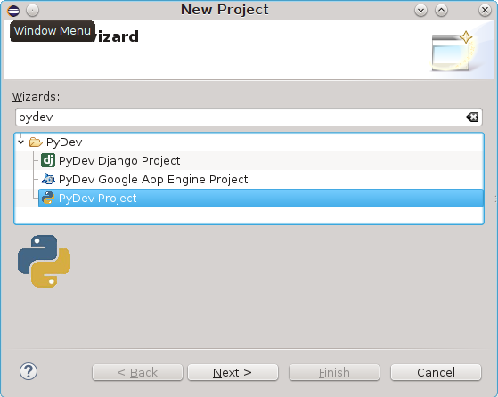
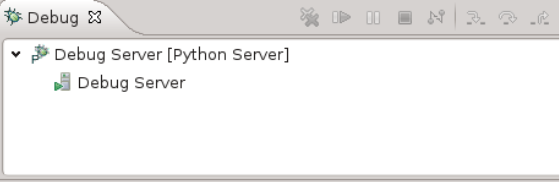

Programski jezik Python


Fakultet tehničkih nauka u Novom Sadu
Katedra za informatiku
Sadržaj
- Kratak pregled jezika
- Leksičke konvencije i sintaksa
- Tipovi i objekti
- Operatori i izrazi
- Struktura programa i kontrola toka
- Funkcije i funkcionalno programiranje
- Klase i objektno-orijentisano programirane
- Moduli i paketi
- Ulaz i izlaz
- Alati
Kratak pregled Python-a
Python
- Razvoj započet 1989 u Holandiji kao hobi projekat Gvida Van Rosuma. Danas jedan od najpopularnijih jezika.
- Interpretiran dinamički jezik visokog nivoa.
- Više paradigmi: imperativno, proceduralno, objektno, funkcionalno...
- Akcenat na efikasnosti programera i čitkosti koda.
- Cross-platform
- Sveobuhvatna i veoma razvijena standardna biblioteka.
- Jezik ima više implementacija.
- Koristi se za desktop i web aplikacije, mobilne aplikacije, administrativne skripte, upravljačke skripte, u ugrađenim sistemima...
- Upotrebljava se u firmama širom sveta: Google, Disney, Dropbox, Industrial Light & Magic...
Zen of Python
>>> import this
Beautiful is better than ugly.
Explicit is better than implicit.
Simple is better than complex.
Complex is better than complicated.
Flat is better than nested.
Sparse is better than dense.
Readability counts.
Special cases aren't special enough to break the rules.
Although practicality beats purity.
Errors should never pass silently.
Unless explicitly silenced.
In the face of ambiguity, refuse the temptation to guess.
There should be one-- and preferably only one --obvious way to do it.
Although that way may not be obvious at first unless you're Dutch.
Now is better than never.
Although never is often better than *right* now.
If the implementation is hard to explain, it's a bad idea.
If the implementation is easy to explain, it may be a good idea.
Namespaces are one honking great idea -- let's do more of those!
Implementacije Python-a
- CPython
- PyPy
- Jython
- Iron Python
- pyjs
- ...
Python konzola
- Pokreće se pozivom Python interpretera bez parametara.
$ python
Python 3.4.1 (default, May 19 2014, 17:23:49)
[GCC 4.9.0 20140507 (prerelease)] on linux
Type "help", "copyright", "credits" or "license" for more information.
>>> print("Hello World!")
Hello World!
>>> 23423432 ** 34
36992864259838982449973046100677855738848171498810334668814347544
72272789093305975943853887303038138168893642829742372685558166974
99603306904629343154070096117901999442230973428786292674630445031
96766248000024671594323356975802355740978014370737946624
>>>
Jednostavan program na Python-u
principal = 1000 # Početni iznos
rate = 0.05 # Kamatna stopa
numyears = 5
year = 1
while year <= numyears:
principal = principal * (1 + rate)
print year, principal # print(year, principal) u Python-u 3
year += 1
- Varijable - imena/reference za objekte.
- Objekti imaju nepromenjiv tip. Varijable mogu da menjaju objekat koji referenciraju.
print i formatiranje izlaza
- Slično
printffunkciji u C-u. - Upotrebom string interpolacije (operator %)
print "%3d %0.2f" % (year, principal)
print("%3d %0.2f" % (year, principal)) # Python 3
- Ili modernija varijanta -
formatfunkcija
print format(year,"3d"),format(principal,"0.2f")
print(format(year,"3d"),format(principal,"0.2f")) # Python 3
# ili format funkcijom nad stringom
print "{0:3d} {1:0.2f}".format(year,principal)
print("{0:3d} {1:0.2f}".format(year,principal)) # Python 3
Uslovi
if a < b:
print "Computer says Yes"
else:
print "Computer says No"
if product == "game" and type == "pirate memory" \
and not (age < 4 or age > 8):
print "I'll take it!"
if suffix == ".htm":
content = "text/html"
elif suffix == ".jpg":
content = "image/jpeg"
elif suffix == ".png":
content = "image/png"
else:
raise RuntimeError("Unknown content type")
if 'spam' in s:
has_spam = True
else:
has_spam = False
Fajl ulaz/izlaz
f = open("foo.txt")
line = f.readline()
while line:
print line, # print(line,end='') za Python 3
line = f.readline()
f.close()
- Isti program u kraćoj formi:
with open("foo.txt") as f:
for line in f:
print line,
- Pisanje u fajl:
f = open("out","w") # Otvaranje za pisanje - "w"
while year <= numyears:
principal = principal * (1 + rate)
print >>f,"%3d %0.2f" % (year,principal)
# Alternativno f.write("%3d %0.2f\n" % (year,principal))
# Za P3, print("%3d %0.2f" % (year,principal),file=f)
year += 1
f.close()
Stringovi
a = "Hello World"
b = 'Python is groovy'
c = """Computer says 'No'"""
print '''Content-type: text/html
<h1> Hello World </h1>
Click <a href="http://www.python.org">here</a>.
'''
b = a[4] # b = 'o'
c = a[:5] # c = "Hello"
d = a[6:] # d = "World"
e = a[3:8] # e = "lo Wo"
g = a + " This is a test"
x = "37"
y = "42"
z = x + y # z = "3742" (konkatanacija stringova)
z = int(x) + int(y) # z = 79 (Integer +)
Liste
- Liste su sekvence proizvoljnih objekata (referenci)
names = [ "Dave", "Mark", "Ann", "Phil" ]
a = names[2] # Vraća treći objekat iz liste - "Ann"
names[0] = "Jeff" # Menja prvi objekat-referencu na "Jeff"
names.append("Paula") # Dodaje "Paula" na kraj liste
names.insert(2, "Thomas") # Ubacuje "Thomas" na lokaciju 2
b = names[0:2] # Vraća [ "Jeff", "Mark" ]
c = names[2:] # Vraća [ "Thomas", "Ann", "Phil", "Paula" ]
names[1] = 'Jeff' # Menja drugi element sa 'Jeff'
names[0:2] = ['Dave','Mark','Jeff'] # Menja prva dva elementa sa liste
# sa listom na desnoj strani
a = [1,2,3] + [4,5] # Rezultat je [1,2,3,4,5]
names = [] # Prazna lista
names = list() # Prazna lista
a = [1,"Dave",3.14, ["Mark", 7, 9, [100,101]], 10]
a[1] # "Dave"
a[3][2] # 9
a[3][3][1] # 101
List comprehensions
import sys # Učitavanje sys modula
if len(sys.argv) != 2 # Proveri broj argumenata
print "Please supply a filename"
raise SystemExit(1)
f = open(sys.argv[1]) # Ime fajla je dato kao paramatar
lines = f.readlines() # Pročitaj sve linije u listu
f.close()
# Konvertuje sve vrednosti u linijama teksta u float
fvalues = [float(line) for line in lines]
# Pronađi min i max vrednosti
print "The minimum value is ", min(fvalues)
print "The maximum value is ", max(fvalues)
N-torke - Tuples
- Nepromenjiva struktura - immutable
stock = ('GOOG', 100, 490.10)
address = ('www.python.org', 80)
person = (first_name, last_name, phone)
# ili samo
stock = 'GOOG', 100, 490.10
address = 'www.python.org',80
person = first_name, last_name, phone
# Načini navođenja
a = () # 0-tuple (prazan tuple)
b = (item,) # 1-tuple (obratiti pažnju na zarez)
c = item, # 1-tuple (obratiti pažnju na zarez)
# "raspakivanje"
name, shares, price = stock
host, port = address
first_name, last_name, phone = person
Primer upotrebe n-torki i lista
# File containing lines of the form "name,shares,price"
filename = "portfolio.csv"
portfolio = []
with open(filename) as f:
for line in f:
fields = line.split(",") # Svaku liniju podeli na mestu ","
name = fields[0] # Izdvoj pojedinačna polja
shares = int(fields[1]) # i konvertuj vrednosti
price = float(fields[2])
stock = (name,shares,price) # Kreiraj n-torku (name, shares, price)
portfolio.append(stock) # Dodaj je na listu slogova
>>> portfolio[0]
('GOOG', 100, 490.10)
>>> portfolio[1]
('MSFT', 50, 54.23)
>>>
>>> portfolio[1][1]
50
>>> portfolio[1][2]
54.23
>>>
total = 0.0
for name, shares, price in portfolio:
total += shares * price
Skupovi - sets
- Neuređena kolekcija objekata.
s = set([3,5,9,10]) # Kreira skup brojeva
t = set("Hello") # Kreira skup jedinstvenih karaktera
>>> t
set(['H', 'e', 'l', 'o'])
- Operacije nad skupovima
a = t | s # Unija skupova t i s
b = t & s # Presek skupova t i s
c = t - s # Razlika skupova t i s
d = t ^ s # Simetrična razlika skupova t i s
# (elementi koji pripadaju ili skupu t ili
# skupu s ali ne i preseku)
- Dodavanje i uklanjanje elemenata.
t.add('x') # Dodavanje jednog elementa u t
s.update([10,37,42]) # Dodavanje više elemenata u s
t.remove('H') # Uklanjanje elementa
Rečnici - dictionaries
- Asocijativni niz objekata indeksiranih ključevima.
- Ključ može biti bilo koji nepromenjivi objekat (immutable).
# Dva načina kreiranja praznog rečnika
stock = {}
stock = dict()
# Kreiranje rečnika sa podacima
stock = {
"name" : "GOOG",
"shares" : 100,
"price" : 490.10
}
# Upotreba
name = stock["name"]
value = stock["shares"] * shares["price"]
# Upis vrednosti
stock["shares"] = 75
stock["date"] = "June 7, 2007"
Rečnici - nastavak
# Mogu se koristiti za brzo pronalaženje podataka
prices = {
"GOOG": 490.10,
"AAPL": 123.50,
"IBM": 91.50,
"MSFT": 52.13
}
# Default vrednosti
if "SCOX" in prices:
p = prices["SCOX"]
else:
p = 0.0
# ili kraće
p = prices.get("SCOX",0.0)
# Lista ključeva
syms = list(prices) # syms = ["AAPL", "MSFT", "IBM", "GOOG"]
# ili
syms = prices.keys()
Iteracija i petlje
for n in [1,2,3,4,5,6,7,8,9]:
print "2 na stepen %d je %d" % (n, 2**n)
for n in range(1,10):
print "2 na stepen %d je %d" % (n, 2**n)
a = range(5) # a = [0, 1, 2, 3, 4]
b = range(1, 8) # b = [1, 2, 3, 4, 5, 6, 7]
c = range(0, 14, 3) # c = [0, 3, 6, 9, 12]
d = range(8, 1, -1) # d = [8, 7, 6, 5, 4, 3, 2]
for i in xrange(100000000): # i = 0,1,2,...,99999999
statements
Iteracija i petlje (2)
- Iterator protokol
- Stringovi su sekvence - podržavaju iterator protokol
a = "Hello World"
# Štampa pojedinačna slova stringa a
for c in a:
print c
- Liste takođe.
b = ["Dave","Mark","Ann","Phil"]
# Štampa članove liste b
for name in b:
print name
Iteracija i petlje (3)
- I mape
c = { 'GOOG' : 490.10, 'IBM' : 91.50, 'AAPL' : 123.15 }
# Štampa sve članove rečnika c
for key in c:
print key, c[key]
- I fajlovi
# Štampa sve linije fajla foo.txt
f = open("foo.txt")
for line in f:
print line,
- Proizvoljni objekti mogu da podrže iterator protokol.
- Kreiranje iteratora upotrebom funkcija - generatori (videti u nastavku)
Funkcije
- Kreiraju se ključnom rečju
def - Ukoliko funkcija nema povratnu vrednost implicitno vraća
None
def fibonacci(n):
"Returns element of fibonacci array at given possition."
if n < 0:
raise ValueError("Array index must be >=0.")
if n < 2:
return 1
return fibonacci(n-2) + fibonacci(n-1)
- Parametri mogu imati podrazumevane vrednosti
def f(a, b=5):
return a + 2 ** b
>>> f(3)
35
>>> f(3, 5)
35
>>> f(3, 6)
67
Funkcije (2)
- Parametri i vrednosti parametara se mogu upariti po poziciji ili po nazivu
def f(a, b=5):
return a + 2 ** b
>>> f(b=3, a=1)
9
- Promenjivi broj parametara, po poziciji i po imenu
def f(*args, **kwargs):
for a in args:
print(a)
for k, v in kwargs.items():
print(k, v)
>>> f(34, 56, 67, b=12, c=89, foo="bar")
34
56
67
b 12
foo bar
c 89
Funkcije (3)
- Sve reference unutar funkcije su unutar opsega funkcije (scope)
- Ako treba da referenciramo globalnu varijablu deklarišemo je sa ključnom
rečju
global.
count = 0
...
def foo1():
count = 1 # Kreiranje lokalne varijable count
...
def foo2():
global count
count += 1 # Izmene globalne varijable count
Generatori
- Umesto jedne vrednosti funkcija može generisati sekvencu vrednosti.
def countdown(n):
print "Counting down!"
while n > 0:
yield n # Generisanje vrednosti (n)
n -= 1
- Poziv funkcije vraća tzv. generator objekat
- Ključna reč
yieldoznačava povratak jedne vrednosti sekvence.
Generatori - upotreba
>>> c = countdown(5)
>>> c.next()
Counting down!
5
>>> c.next()
4
>>> c.next()
3
>>> for i in countdown(5):
...
print i,
Counting down!
5 4 3 2 1
- Svaki objekat (klasa) koji implementira generator protokol može da se koristi kao generator.
Korutine (coroutines)
- Koncept obrnut generatorima.
- Funkcije koje mogu spolja da prime sekvencu vrednosti u toku izvršavanja.
def print_matches(matchtext):
print "Tražim", matchtext
while True:
line = (yield) # Preuzmi liniju teksta spolja
if matchtext in line:
print line
>>> matcher = print_matches("python")
>>> matcher.next() # Postavlja se na prvi (yield)
Tražim python
>>> matcher.send("Hello World")
>>> matcher.send("python is cool")
python is cool
>>> matcher.send("yow!")
>>> matcher.close() # Na kraju je potrebno zatvoriti korutinu
- Omogućavaju implementaciju producer-consumer ili pipe obrasca bez upotrebe niti i višenitnog programiranja.
Objekti i klase
- Sve vrednosti su objekti.
- Objekat se sastoji od internih podataka i metoda koje operišu nad njima.
- Metode i atributi objekta se mogu izlistati ugrađenom funkcijom
dir.
- Stringovi su objekti.
- Proba
>>> dir("foo")
['__add__', '__class__', '__contains__', '__delattr__',
... '__len__', '__lt__', '__mod__', '__mul__',
... 'capitalize', 'center', 'count', 'decode', 'encode',
... 'startswith', 'strip', 'swapcase', 'title', 'translate',
'upper', 'zfill']
- Brojevi su objekti
>>> dir(2)
['__abs__', '__add__', '__and__', '__class__', '__cmp__', '__coerce__',
...'__pow__', '__radd__', '__rand__', '__rdiv__', '__rdivmod__',
...'bit_length', 'conjugate', 'denominator', 'imag', 'numerator', 'real']
Objekti i klase (2)
- Funkcije su objekti
>>> dir(fibonacci)
['__call__', '__class__', '__closure__', '__code__',
...
'func_dict', 'func_doc', 'func_globals', 'func_name']
- Liste su objekti
>>> items = [37, 42]
>>> dir(items)
['_ _add_ _', '_ _class_ _', '_ _contains_ _', '_ _delattr_ _'
...
'append', 'count', 'extend', 'index', 'insert', 'pop',
'remove', 'reverse', 'sort']
>>>
Objekti i klase (3)
- Specijalne metode su oblika
__xxx__ - Ove metode se koriste za implementaciju npr. operatora (npr. +, -, *, in...)i odgovora na specijalne ugrađene funkcije (npr. len)
>>> items = [37, 42]
>>> items.__add__([73,101])
[37, 42, 73, 101]
# je ekvivalentno sa
>>> items + [73, 101]
- Klasa može da proizvoljno redefiniše specijalne metode.
Objekti i klase (4)
- Specijalna metoda __init__ predstavlja konstruktor.
- Primer: implementacija steka
class Stack(object):
def __init__(self):
self.stack = [ ]
def push(self,object):
self.stack.append(object)
def pop(self):
return self.stack.pop()
def length(self):
return len(self.stack)
s = Stack()
s.push("Dave")
s.push(42)
s.push([3,4,5])
x = s.pop()
y = s.pop()
del s
- Svaka metoda prima objekat kao eksplicitan prvi parametar.
- Po konvenciji parametar nazivamo
self
Objekti i klase (5)
- Pošto je stek vrlo sličan Python listi možemo direktno naslediti ugrađenu listu.
class Stack(list): # Nasleđujemo listu
# Dodajemo push metodu da bi implementirali
# stack interfejs
# Napomena: liste već imaju pop() methodu.
def push(self,object):
self.append(object)
- Ovako kreirana klasa ima sve osobine liste.
>>> s = Stack()
>>> s.push(2)
>>> s.push(3)
>>> s.push(4)
>>> s
[2, 3, 4]
>>> s[:2]
[2, 3]
Objekti i klase
- Klasa može da definiše različite vrste metoda.
class EventHandler(object):
@staticmethod
def dispatcherThread():
while (1):
# Wait for requests
...
EventHandler.dispatcherThread() # Poziv static metode kao da je funkcija
- @staticmethod je dekorator. Više u nastavku.
Izuzeci
- Ukoliko dođe do graške u programu javlja se izuzetak
- Ispis može biti poput ovoga:
Traceback (most recent call last):
File "foo.py", line 12, in <module>
IOError: [Errno 2] No such file or directory: 'file.txt'
- Izuzeci se mogu uhvatiti i obraditi.
f = open("file.txt", "r")
try:
... obrada fajla
except Exception as e:
.. obrada izuzetka
finally:
# Ovaj blok se uvek izvršava na kraju
# bez obzira šta da se desi
f.close()
- Izuzeci se programski izazivaju na mestu detektovanja nevalidnog stanja sa:
raise RuntimeError("Computer says no")
Izuzeci - konteksti
- Upotreba nekog resursa uvek zahteva njegovo oslobađanje (zatvaranje) po završetku upotrebe.
- Ovo oslobađanje može biti teže izvodljivo u kontekstu izuzetaka.
- Zato je uvedena ključna reč
with.
import threading
message_lock = threading.Lock()
...
with message_lock:
messages.add(newmessage)
- Izlaskom iz
withbloka, bilo regularno ili zbog izuzetka biće automatski obavljeno oslobađanje resursa. - Objekti koji mogu da se navedu u iskazu
withimplementiraju određeni kontekst protokol (dve specijalne metode:__enter__i__exit__)
Izuzeci - konteksti
-
openfunkcija vraća kontekst. Zato je moguće pisati:
with open('file.txt') as f:
... obrada fajla f
Moduli
- Veće programe je poželjno razbiti u više fajlova/modula.
- Python omogućava import-ovanje definicija iz drugih fajlova/modula.
- Python moduli su fajlovi sa ekstenzijom .py
# file : div.py
def divide(a,b):
q = a/b
r = a - q*b
return (q,r)
import div
a, b = div.divide(2305, 29)
import div as foo
a,b = foo.divide(2305,29)
from div import divide
a,b = divide(2305,29)
from div import *
Moduli (2)
- I moduli su objekti
>>> import string
>>> dir(string)
['_ _builtins_ _', '_ _doc_ _', '_ _file_ _', '_ _name_ _', '_idmap',
'_idmapL', '_lower', '_swapcase', '_upper', 'atof', 'atof_error',
'atoi', 'atoi_error', 'atol', 'atol_error', 'capitalize',
'capwords', 'center', 'count', 'digits', 'expandtabs', 'find',
...
Leksičke konvencije i sintaksa
Struktura linije i indentacija
a = math.cos(3 * (x - n)) + \
math.sin(3 * (y - n))
if a:
statement1 # Ispravna indentacija
statement2
else:
statement3
statement4 # Neispravna indentacija
if a: statement1
else: statement2
if a:
pass
else:
statements
Struktura linije i indentacija (2)
- Nije propisana širina uvlačenja ali mora biti konzistentan.
- Preporučeno je 4 space karaktera za uvlačenje.
- Preporuka je da se koriste space karakteri umesto tab.
String literali
- Navode se unutar jednostrukih ili dvostrukih znakova navoda ili trostrukih za višelinijske stringove.
- Unutar stringova \ karakter (backslash) služi da definiše tzv. escape sekvencu odnosno da omogući navođenje specijalnih znakova.
- Moguće je navesti i unicode kod sa prefiksom \u
- Za detalje videti reference.
Kontejneri
- Vrednosti koje se navode unutar zagrada [...], (...), {...} predstavljaju kolekciju objekata koja se nalazi unutar liste, n-torke ili rečnika.
a = [ 1, 3.4, 'hello' ]
b = ( 10, 20, 30 )
c = { 'a': 3, 'b': 42 }
- Elementi kontejnera se mogu navoditi u više linija bez upotrebe znaka za nastavak linije (\)
- Takođe, na kraju liste može da postoji , i to je sintaksno dozvoljeno.
a = [ 1,
3.4,
'hello',
]
Tipovi i objekti
Terminologija
- Svi podaci Python programa su objekti.
- Objekti imaju identitet, tip i vrednost.
>>> a = 42
>>> id(a)
140649856584416
>>> id(42)
140649856584416
>>> type(a)
<class 'int'>
>>> b = a
>>> id(b)
140649856584416
>>> type(b)
<class 'int'>
>>>
- Jednom kreiran, identitet i tip objekta su nepromenjivi.
- Ukoliko je vrednost objekta nepromenjiva kažemo da je objekat nepromenjiv (immutable).
Terminologija (2)
- Objekti koji sadrže reference na druge objekte se nazivaju kontejneri ili kolekcije.
- Objekte karakterišu atributi i metode.
- Atributi su podaci pridruženi objektima.
- Metode su funkcije koje vrše određene operacije nad objektom.
a = 3 + 4j # Kreiranje kompleksnog broja
r = a.real # Realni deo (atribut)
b = [1, 2, 3] # Kreiranje liste
b.append(7) # Dodavanje novog elementa upotrebom append metode
Duck Typing
- Metode i atributi objekta definišu njegovu semantiku a ne pripadnost određenom tipu tj. nasleđivanje određene klase
If it walks like a duck and quacks like a duck, it must be a duck.
def sum(a, b):
return a + b # a i b podržavaju + operaciju
>>> print sum(2, 5)
7
>>> print sum(2.5, 6.7)
9.2
>>> print sum(True, False)
1
>>> print sum("Hello ", "world!")
Hello world!
Protokoli
- Koncept tesno povezan sa duck typing.
- Predstavlja određeno ponašanje objekta (skup metoda, atributa i njihove semantike).
- Ako kažemo da objekat podržava neki protokol znamo šta možemo da očekujemo od njega i u kom kontekstu možemo da ga koristimo bez obzira kog je tipa.
- Na primer, ako je objekat sekvenca (podržava protokol sekvence) tada znamo da možemo da koristimo isecanje (slice), iteraciju itd.
Identitet i tip objekta
# Poređenje dva objekta
def compare(a,b):
if a is b:
# a i b su isti objekat
...
if a == b:
# a i b imaju istu vrednost
...
if type(a) is type(b):
# a i b su istog tipa
...
if type(s) is list:
s.append(item)
if type(d) is dict:
d.update(t)
if isinstance(s,list):
s.append(item)
if isinstance(d,dict):
d.update(t)
Brojanje referenci
a = 37 # Kreira objekat sa vrednošću 37
b = a # Uvećava brojač referenci za 37
c = []
c.append(b) # Uvećava brojač referenci za 37
del a # Umanjuje brojač referenci za 37
b = 42 # - II -
c[0] = 2.0 # - II -
>>> a = 37
>>> import sys
>>> sys.getrefcount(a)
7
>>>
Reference i kopije
>>> a = [1,2,3,4]
>>> b = a # b je referenca na listu a
>>> b is a
True
>>> b[2] = -100 # Promena elementa u b
>>> a
[1, 2, -100, 4] # Element je promenjen u a jer je to
>>> # isti objekat
Plitko i duboko kopiranje
>>> a = [ 1, 2, [3,4] ]
>>> b = list(a)
>>> b is a
False
>>> b.append(100)
>>> b
[1, 2, [3, 4], 100]
>>> a
[1, 2, [3, 4]]
>>> b[2][0] = -100
>>> b
[1, 2, [-100, 4], 100]
>>> a
[1, 2, [-100, 4]]
>>> import copy
>>> a = [1, 2, [3, 4]]
>>> b = copy.deepcopy(a)
>>> b[2][0] = -100
>>> b
[1, 2, [-100, 4]]
>>> a
[1, 2, [3, 4]]
>>>
First-Class Objects
- Svi objekti u Python-u su "prvog reda" (first-class)
- Ovo znači da svi objekti koji se mogu imenovati (referencirati) imaju isti status.
items = {
'number' : 42
'text' : "Hello World"
}
items["func"] = abs
import math
items["mod"] = math
items["error"] = ValueError
nums = [1,2,3,4]
items["append"] = nums.append
>>> items["func"](-45) # Poziva abs(-45)
45
>>> items["mod"].sqrt(4) # Poziva math.sqrt(4)
2.0
>>> try:
...
x = int("a lot")
... except items["error"] as e:
# Isto kao except ValueError as e
...
print("Couldn't convert")
...
Couldn't convert
>>> items["append"](100) # Izvršava nums.append(100)
>>> nums
[1, 2, 3, 4, 100]
>>>
Ugrađeni tipovi za podatke
- None: NoneType
- Brojevi: int, long, float, complex, bool
- Sekvence: str, unicode, list, tuple, xrange
- Mape: dict
- Skupovi: set(mutable), frozenset(immutable)
Sekvence
- Uređena kolekcija objekata indeksirana nenegativnim rednim brojem.
- Stringovi - nepromenjiva sekvenca karaktera.
- n-torka(tuple) - nepromenjiva sekvenca proizvoljnih objekata.
- Sve sekvence podržavaju slicing i iteracije.
Operacije nad sekvencama
s[i] # Indeksni pristup
s[i:j] # Isecanje (slicing)
s[i:j:korak] # Prošireno isecanje
len(s) # broj elemenata sekvence
min(s), max(s) # minimalna/maksimalna vrednosta u sekvenci
sum(s, [initial]) # sumiranje sekvence
all(s) # da li su svi elementi sekvence True
any(s) # da li je bilo koji element u listi True
for a in s: # iteracija
...
Operacije nad promenjivim sekvencama
s[i] = v
s[i:j] = t
s[i:j:korak] = t
del s[i]
del s[i:j]
del s[i:j:korak]
Liste
- Liste su sekvence.
- Svaka sekvenca se može konvertovati u listu sa
list(s). - Definišu sledeće metode:
s.append(x)- dodavanje na krajs.extend(t)- proširenje sa listom ts.count(x)- broj pojava vrednosti xs.index(x)- pozicija prve pojave vrednosti xs.insert(i, x)- umetanje vrednosti x na poziciju is.pop()- izbacivanje elementa sa kraja listes.remove(x)- izbacivanje elementa x iz listes.reverse()- obrtanje liste u mestus.sort([key, [, reverse]])- sortiranje liste u mestu
Stringovi
- Stringovi u Python-u 2 mogu biti byte i unicode stringovi.
- U python-u 2 unicode stringovi imaju prefix u.
ustr = u'Ово је ћирилични unicode стринг!'
bstr = 'Ovo je byte string!'
a = 'Ovo je string'
b = "I ovo je string"
c = """ Ovo je viselinijski
string
Evo jos jedne linije
"""
d = '''
I ovo je viselinijski
string
'''
Stringovi (2)
- Stringovi su nepromenjivi objekti (immutable). Sve metode stringa koje vraćaju string kreiraju novi string.
- Neke od metoda:
s.capitalize() # Prvi karakter postaje veliko slovo.
s.center(width [, pad]) # Centrira string unutar zadate širine.
s.find(sub [, start [,end]]) # Pronalazi podstring
s.isalnum() # True ukoliko je alfanumerik
s.isdigit() # True ukoliko su svi karakteri cifre
s.lower() # Sva slova postaju mala
s.split([sep [,maxsplit]]) # Deli string na mestu separator i vraća
# listu podstringova
Stringovi - formatiranje
- Tri načina:
- Konkatanacija - operator + - izbegavati.
- Interpolacija - % operator.
formatmetoda - noviji i preferirani način.
>>> "Odgovor je %d" % 42
'Odgovor je 42'
>>> "Prvi=%s, drugi=%d, treci=%s" % ("prvi", 23, "third")
'Prvi=prvi, drugi=23, treci=third'
>>> "Prvi=%(prvi)s, drugi=%(drugi)d, pa opet %(prvi)s"
% {'drugi':11, 'prvi':"34"}
'Prvi=34, drugi=11, pa opet 34'
>>> "{} ribi {} rep.".format("Riba", "grize")
'Riba ribi grize rep.'
>>> "{1} ribi {0} rep.".format("Riba", "grize")
'grize ribi Riba rep.'
>>> "{ko} ribi {sta} rep.".format(ko="Riba", sta="grize")
'Riba ribi grize rep.'
>>> "{ko} ribi {sta} rep.".format(sta="soli", ko="riba")
'riba ribi soli rep.'
Mape
- Promenjive, neuređene kolekcije proizvoljnih objekata indeksirane proizvoljnim objektom (uz određena ograničenja).
- Rečnici (dict) su ugrađeni tip i predstavljaju implementaciju hash tabela ili asocijativnih nizova.
- dict kao ograničenje za ključeve zahteva nepromenjivost (immutability) jer hash vrednost mora biti konstantna.
- Operacije:
m = {} # Kreiranje praznog rečnika
m = { # Kreiranje rečnika sa elementima
'BG': 11000,
'NS': 21000, # Zarez na kraju je dozvoljen
}
m['KG'] = # Upis u rečnik
m['NS'] # Čitanje vrednosti
21000
del m['BG'] # Brisanje vrednosti
m[42] = 'Odgovor' # Ključevi i vrednosti mogu biti
# različitog tipa
Mape (2)
len(m) # Broj elemenata rečnika
'NS' in m # Provera pripadnosti
m.clear() # Uklanja sve elemente
m.copy() # Vraća kopiju od m
m.get(k[, default]) # Vraća objekat pod ključem k a ako
# ne postoji vraća v
m.items() # Vraća sekvencu (ključ, vrednost) parova
m.keys() # Vraća kolekciju ključeva
m.values() # Vraća kolekciju vrednosti
m.setdefault(k[, v]) # Vraća m[k] ako postoji a ako ne vraća
# v i postavlja m[k]=v
m.update(b) # Proširuje m sa elementima mape b
m.pop(k[, default]) # Uklanja i vraća m[k] ukoliko postoji ili
# default ukoliko ne postoji
Dict comprehensions
# Treba da kreiramo mapu od sekvence ključeva i vrednosti
mapa = {}
for idx, kljuc in enumerate(kljucevi):
mapa[kljuc] = vrednosti[idx]
# ili upotrebom dict comprehensions
mapa = { kljuc:vrednost for kljuc, vrednost in zip(kljucevi, vrednosti) }
Skupovi
- Neuređene kolekcije jedinstvenih elemenata.
- Elementi nisu indeksirani. Ne postoji slice operator.
- Elementi moraju biti nepromenjivi (immutable).
- Dve vrste:
-
set- promenivi skup -
frozenset- nepromenjivi skup - Instanciraju se pozivom sa parametrom koji implementira iterator protokol.
s = set([1,5,10,15])
f = frozenset(['a',37,'hello'])
Skupovi - operacije
len(s) # Broj elemenata
s.copy() # Kopija
s.intersection(t) # s & t - presek
s.union(t) # s | t - unija
s.difference(t) # s - t - razlika
s.symetric_difference(t) # s ^ t - simetrična razlika
s.isdisjoint(t) # True ako nemaju zajedničkih elem.
s.issubset(t) # True ako je s podskup od t
s.issuperset(t) # True ako je s nadskup od t
# Promenivi skupovi još imaju i
s.add(element)
s.remove(element)
s.clear()
s.update(iterable) # Dodaje sve elemente iterabilne kolekcije na s
...
Callables
- Objekti koji podržavaju semantiku poziva.
- Funkcije, klase, metode.
- Tretiraju se kao i svi drugi objekti - mogu biti elementi kolekcija, mogu se prosleđivati kao parametri, biti povratne vrednosti drugih callables itd.
def foo(x,y):
return x + y
bar = lambda x,y: x + y
funkcije = [foo, bar]
for f in funkcije:
print f(2,3)
def div_by_maker(x):
def div_by(b):
return b/x
return div_by
a = div_by_maker(5)
a(20) # = 4
b = div_by_maker(2)
b(20) # = 10
b(10) # = 5
Operatori i izrazi
Struktura programa i kontrola toka
Struktura programa
- Svaki iskaz se tretira na isti način. Nema specijalnih iskaza.
- Svaki iskaz se može pojaviti bilo gde u programu.
if debug:
def square(x):
if not isinstance(x,float):
raise TypeError("Expected a float")
return x * x
else:
def square(x):
return x * x
Uslovno izvršavanje
if expression:
statements
elif expression:
statements
elif expression:
statements
...
else:
statements
Petlje i iteracije
while expression:
statements
# For petlja (s podržava iterator protokol)
for i in s:
statements
# Ili razloženo
it = s.__iter__() # Iterator za kolekciju s
while True:
try:
i = it.next() # Sledeći element (__next__ u P3)
# Obradi element i
except StopIteration:
# Nema više elemenata
break
...
Raspakivanje elemenata
- Ukoliko su svim elementi kolekcije sekvence iste dužine moguće je uraditi sledeće:
# s je oblika [ (x1,y1,z1), (x2,y2,z2),... ]
for x,y,z in s:
... Obrada x, y, z elemenata
Indeks u for petlji
- Kada se iterira kroz elemente kolekcije nekad je potrebno znati indeks.
i = 0
for x in s:
statements
i += 1
# Ili jednostavnije
for i,x in enumerate(s):
statements
Paralelna iteracija
- Često je potrebno iterirati paralelno kroz više kolekcija.
# s i t su dve sekvence
i = 0
while i < len(s) and i < len(t):
x = s[i] # Uzmi i-ti element iz s
y = t[i] # Uzmi i-ti element iz t
statements
i += 1
# Ili jednostavnije
for x,y in zip(s,t):
statements
For-else, break, continue
- Iz
forpetlje može prevremeno da se izađe upotrebombreakiskaza. Forpetlja može imati opcionielseblok koji se izvršava ukoliko se petlja nije završila prevremeno (breakiskaz)
for line in open("foo.txt"):
stripped = line.strip()
if not stripped:
break
# process the stripped line
...
else:
raise RuntimeError("Missing section separator")
- Sa
continuese može direktno preći na sledeći ciklus iteracije.
for line in open("foo.txt"):
stripped = line.strip()
if not stripped: # Ako je linija prazna
continue # Preskoči je
# Obradi sve linije koje nisu prazne
Funkcije i funkcionalno programiranje
Osnove
# Definisanje
def add(x, y):
return x + y
# Lambda funkcija
l = lambda x, y: x + y
Podrazumevana vrednost parametara
# Podrazumenavana vrednost parametara
def split(line, delimiter=','):
statements
# Povezivanje je u trenutku kreiranja funkcije.
# Primer:
a = 10
def foo(x=a):
return x
a = 5 # Redefinisanje varijable 'a'
foo() # Vraća 10 (podrazumevana vrednost nije promenjena)
Napomena kod mutable tipova
#Problem
def foo(x, items=[]):
items.append(x)
return items
foo(1) # Vraća [1]
foo(2) # Vraća [1, 2]
foo(3) # Vraća [1, 2, 3]
# Rešenje
def foo(x, items=None):
items = [] if items is None else items
items.append(x)
return items
Promenjiv broj argumenata - po poziciji
def fprintf(file, fmt, *args):
file.write(fmt % args)
# Poziv fprintf. args postaje n-torka (42,"hello world", 3.45)
fprintf(out,"%d %s %f", 42, "hello world", 3.45)
# n-torke možemo i "raspakovati" pri pozivu upotrebom * operatora
def printf(fmt, *args):
# Poziv druge funkcije i prosleđivanje argumenata
fprintf(sys.stdout, fmt, *args)
# Ili npr.
a = (2,3)
f = lambda x, y: x + y
print f(*a) # n-torka a se "razlaže" i prosleđuje poziciono
Prosleđivanje parametara po nazivu
def foo(x, y, z, w):
statements
# Keyword argument invocation
foo(x=3, y=22, w='hello', z=[1,2])
# Može i kombinovano
foo(3, 22, w='hello', z=[1,2])
# Ali ne i ovako - višestruke vrednosti za y
foo('hello', 3, z=[1,2], y=22)
Promenjiv broj argumenata - imenovani parametri
def make_table(data, **parms):
# Get configuration parameters from parms (a dict)
fgcolor = parms.pop("fgcolor","black")
bgcolor = parms.pop("bgcolor","white")
width = parms.pop("width",None)
...
# No more options
if parms:
raise TypeError("Unsupported configuration options %s" % list(parms))
make_table(items, fgcolor="black", bgcolor="white", border=1,
borderstyle="grooved", cellpadding=10,
width=400)
Promenjiv broj argumenata - kombinovan prenos
- Mogu se kombinovati pozicioni i imenovani parametri dok god se imenovani (**) nalaze na kraju
# Različit broj pozicionih i imenovanih parametara
def spam(*args, **kwargs):
# args je n-torka sa pozicionim parametrima
# kwargs je rečnik sa imenovanim parametrima
...
# Možemo i prosleđivati parametre drugim funkcijama
# To se često koristi kod tzv. wrapper ili proxy funkcija
def callfunc(*args, **kwargs):
func(*args,**kwargs)
Prenos parametara i povratne vrednosti
- Prenos se obavlja po referenci.
a = [1, 2, 3, 4, 5]
def square(items):
for i, x in enumerate(items):
items[i] = x * x # Menja elemente u mestu
square(a) # Promena u [1, 4, 9, 16, 25]
- Ako funkcija vraća više vrednosti to se može učiniti n-torkom (tuple).
def factor(a):
d = 2
while (d <= (a / 2)):
if ((a / d) * d == a):
return ((a / d), d)
d = d + 1
return (a, 1) # Vraćamo dve vrednosti iz funkcije
(x, y) = factor(1234)
# ili jednostavno
x, y = factor(1234)
Pravila dometa (scoping rules) - lokalne i globalne varijable
a = 42
def foo():
a = 13
foo()
# ovde je a 42
a = 42
b = 37
def foo():
global a # Deklarišemo 'a' kao globalnu
a = 13
b = 0
foo()
# a je 13. b je još uvek 37.
Pravila dometa (scoping rules) - ne-lokalne varijable
def countdown(start):
n = start
def display():
print('T-minus %d' % n)
def decrement():
n -= 1 # Ne radi u Python 2
while n > 0:
display()
decrement()
def countdown(start):
n = start
def display():
print('T-minus %d' % n)
def decrement():
nonlocal n # Radi samo u Python 3
n -= 1
while n > 0:
display()
decrement()
Dekoratori
- Dekorator obrazac.
- Funkcije koje prihvataju kao parametar funkciju (ili uopšte
callable) i vraćaju izmenjenu verziju.
@trace
def square(x):
return x*x
# Ovo je ekvivalentno sa
def square(x):
return x*x
square = trace(square)
enable_tracing = True
if enable_tracing:
debug_log = open("debug.log","w")
def trace(func):
if enable_tracing:
def callf(*args,**kwargs):
debug_log.write("Calling %s: %s, %s\n" %
(func._ _name_ _, args, kwargs))
r = func(*args,**kwargs)
debug_log.write("%s returned %s\n" %
(func._ _name, r))
return r
return callf
else:
return func
Dekoratori (2)
- Mogu da se stekuju.
@foo
@bar
@spam
def grok(x):
pass
# je isto što i
def grok(x):
pass
grok = foo(bar(spam(grok)))
Dekoratori (3)
- Mogu da imaju parametre
@eventhandler('BUTTON')
def handle_button(msg):
...
@eventhandler('RESET')
def handle_reset(msg):
...
# Sto je ekvivalentno sa
def handle_button(msg):
...
temp = eventhandler('BUTTON')
handle_button = temp(handle_button)
# Event handler decorator
event_handlers = { }
def eventhandler(event):
def register_function(f):
event_handlers[event] = f
return f
return register_function
List comprehensions opet
nums = [1, 2, 3, 4, 5]
squares = []
for n in nums:
squares.append(n * n)
# Ekvivalentno
nums = [1, 2, 3, 4, 5]
squares = [n * n for n in nums]
# Opšti oblik sintakse
[expression for item1 in iterable1 if condition1
for item2 in iterable2 if condition2
...
for itemN in iterableN if conditionN ]
# Što je ekvivalentno sa
s = []
for item1 in iterable1:
if condition1:
for item2 in iterable2:
if condition2:
...
for itemN in iterableN:
if conditionN: s.append(expression)
List comprehensions primeri
a = [-3, 5, 2, -10, 7, 8]
b = 'abc'
c = [2*s for s in a] # c = [-6,10,4,-20,14,16]
d = [s for s in a if s >= 0] # d = [5,2,7,8]
e = [(x,y) for x in a # e = [(5,'a'),(5,'b'),(5,'c'),
for y in b # (2,'a'),(2,'b'),(2,'c'),
if x > 0 ] # (7,'a'),(7,'b'),(7,'c'),
# (8,'a'),(8,'b'),(8,'c')]
f = [(1,2), (3,4), (5,6)]
g = [math.sqrt(x * x + y * y) # g = [2.23606, 5.0, 7.81024]
for x,y in f]
Generator izrazi
- Slično kao list comprehensions ali ne kreiraju listu već generator objekat koji izračunava vrednosti na zahtev (lenja evaluacija).
# Opšti oblik sintakse
(expression for item1 in iterable1 if condition1
for item2 in iterable2 if condition2
...
for itemN in iterableN if conditionN )
>>> a = [1, 2, 3, 4]
>>> b = (10*i for i in a)
>>> b
<generator object at 0x590a8>
>>> b.next()
10
>>> b.next()
20
...
Generator izrazi - primer
f = open("data.txt")
lines = (t.strip() for t in f)
comments = (t for t in lines if t[0] == '#')
for c in comments:
print(c)
# Uvek se može konvertovati u listu
clist = list(comments)
lambda iskaz
- Kreiranje anonimne funkcije.
# Sintaksa
lambda args : expression
# Primeri
a = lambda x,y : x+y
r = a(2,3)
# Osnovna namena - kratke callback funkcije
# Npr. - case-insensitive sortiranje
names.sort(key=lambda n: n.lower())
Klase i objektno-orijentisano programiranje
Klase
- Kolekcija funkcija (metoda), varijabli (atributa) i dinamičkih atributa(properties)
class Account(object):
num_accounts = 0
def __init__(self,name,balance): # Konstruktor
self.name = name
self.balance = balance
Account.num_accounts += 1 # Pristup deljenom class atributu
def __del__(self):
Account.num_accounts -= 1
def deposit(self,amt):
self.balance = self.balance + amt
def withdraw(self,amt):
self.balance = self.balance - amt
def inquiry(self):
return self.balance
class iskaz
- Klasa je python objekat koji se kreira kada interpreter naiđe na
classiskaz i uspešno ga obradi. - Referenca na ovaj objekat je ime klase.
-
classiskaz nije ni počemu poseban i može da se koristi bilo gde gde se mogu koristiti i drugi iskazi.
def napravi_klasu():
class MojaKlasa(object):
def __init__(self, a):
self.a = a
return MojaKlasa
k = napravi_klasu() # k je klasa
m = napravi_klasu() # m je klasa
id(k) != id(m) # ali nova
Instanciranje
- Istanciranje objekta se obavlja pozivom klase.
- Klasa je callable.
a = Account("Guido", 1000.00) # Poziva Account.__init__(a,"Guido",1000.00)
b = Account("Bill", 10.00)
Referenciranje atributa i metoda
a.deposit(100.00) # Poziva Account.deposit(a, 100.00)
b.withdraw(50.00) # Poziva Account.withdraw(b, 50.00)
name = a.name # Pristup 'name' atributu
Pravila opsega (scoping)
- Klase definišu prostor imena (namespace) ali metode nemaju prostor imena.
- Pristup atributima iz metoda mora biti potpuno kvalifikovan
- U tu svrhu koristi se eksplicitna
selfreferenca.
class Foo(object):
def bar(self):
print("bar!")
def spam(self):
bar(self) # Neispravno! 'bar' baca NameError izuzetak
self.bar() # Ispravno
Foo.bar(self) # Takođe ispravno
Nasleđivanje
import random
class EvilAccount(Account):
def inquiry(self):
if random.randint(0,4) == 1:
return self.balance * 1.10
else:
return self.balance
c = EvilAccount("George", 1000.00)
c.deposit(10.0)
available = c.inquiry()
Nasleđivanje (2)
- Naslednica može da doda nove atribute.
class EvilAccount(Account):
def __init__(self, name, balance, evilfactor):
Account.__init__(self, name, balance)
self.evilfactor = evilfactor
def inquiry(self):
if random.randint(0,4) == 1:
return self.balance * 1.10
else:
return self.balance
super funkcija
class MoreEvilAccount(EvilAccount):
def deposit(self,amount):
self.withdraw(5.00)
EvilAccount.deposit(self, amount)
class MoreEvilAccount(EvilAccount):
def deposit(self,amount):
self.withdraw(5.00)
super(MoreEvilAccount, self).deposit(amount)
# U python-u 3 može i samo
super().deposit(amount)
Višestruko nasleđivanje
class DepositCharge(object):
fee = 5.00
def deposit_fee(self):
self.withdraw(self.fee)
class WithdrawCharge(object):
fee = 2.50
def withdraw_fee(self):
self.withdraw(self.fee)
class MostEvilAccount(EvilAccount,
DepositCharge,
WithdrawCharge):
def deposit(self,amt):
self.deposit_fee()
super(MostEvilAccount,self).deposit(amt)
def withdraw(self,amt):
self.withdraw_fee()
super(MostEvilAcount,self).withdraw(amt)
d = MostEvilAccount("Dave",500.00,1.10)
d.deposit_fee() # DepositCharge.deposit_fee(). Fee je 5.00
d.withdraw_fee() # WithdrawCharge.withdraw_fee(). Fee je 5.00 ??
Višestruko nasleđivanje - MRO
- Method Resolution Order - MRO
>>> MostEvilAccount.__mro__
(<class '_ _main_ _.MostEvilAccount'>,
<class '_ _main_ _.EvilAccount'>,
<class '_ _main_ _.Account'>,
<class '_ _main_ _.DepositCharge'>,
<class '_ _main_ _.WithdrawCharge'>,
<type 'object'>)
>>>
Polimorfizam, dinamičko povezivanje, duck typing
- Korišćenje objekta bez obzira na njegov konkretni tip.
- Dovoljno je samo da ima određene atribute i metode tj. određeno ponašanje.
- U Python-u nije bitna ni hijerarhija nasleđivanja.
- Primer: file-like objekti iz standardne biblioteke.
Static metode
class Foo(object):
@staticmethod
def add(x,y):
return x + y
x = Foo.add(3,4)
Static metode (2)
class Date(object):
def __init__(self,year,month,day):
self.year = year
self.month = month
self.day = day
@staticmethod
def now():
t = time.localtime()
return Date(t.tm_year, t.tm_mon, t.tm_day)
@staticmethod
def tomorrow():
t = time.localtime(time.time()+86400)
return Date(t.tm_year, t.tm_mon, t.tm_day)
a = Date(1967, 4, 9)
b = Date.now() # Calls static method now()
c = Date.tomorrow() # Poziva static metodu tomorrow()
class metode
- Metode klase koje primaju
classobjekat klase nad kojom su pozvane.
class Times(object):
factor = 1
@classmethod
def mul(cls,x):
return cls.factor * x
class TwoTimes(Times):
factor = 2
x = TwoTimes.mul(4) # Poziva Times.mul(TwoTimes, 4) -> 8
Primer upotrebe class metode - problem
class EuroDate(Date):
# Izmena string konverzije da koristi evropske datume
def __str__(self):
return "%02d/%02d/%4d" % (self.day, self.month, self.year)
- Problem je ukoliko se pozove
EuroDate.now()biće vraćena instancaDateklase.
Primer upotrebe class metode - rešenje
class Date(object):
...
@classmethod
def now(cls):
t = time.localtime()
# Kreiranje objekat odgovarajućeg tipa
return cls(t.tm_year, t.tm_month, t.tm_day)
class EuroDate(Date):
...
a = Date.now() # Poziva Date.now(Date) i vraća Date
b = EuroDate.now() # Poziva Date.now(EuroDate) i vraća EuroDate
# Jedna napomena. Metode su dostupne i na instancama
a = Date(1967,4,9)
b = d.now() # Poziva Date.now(Date)
Properties
- Specijalna vrsta atributa koja dinamički izračunava svoju vrednost.
class Circle(object):
def __init__(self,radius):
self.radius = radius
@property
def area(self):
return math.pi * self.radius ** 2
@property
def perimeter(self):
return 2 * math.pi * self.radius
>>> c = Circle(4.0)
>>> c.radius
4.0
>>> c.area
50.26548245743669
>>> c.perimeter
25.132741228718345
>>> c.area = 2
Traceback (most recent call last):
File "<stdin>", line 1, in <module>
AttributeError: can't set attribute
>>>
Properties - setters
class Foo(object):
def __init__(self,name):
self.__name = name
@property
def name(self):
return self.__name
@name.setter
def name(self,value):
if not isinstance(value,str):
raise TypeError("Must be a string!")
self.__name = value
@name.deleter
def name(self):
raise TypeError("Can't delete name")
f = Foo("Guido")
n = f.name # Poziva f.name() - getter
f.name = "Monty" # Poziva setter name(f, "Monty")
f.name = 45 # Poziva setter name(f, 45) -> TypeError
del f.name # Poziva deleter name(f) -> TypeError
Enakpsulacija i privatni atributi
class A(object):
def __init__(self):
self.__X = 3 # Izmenjeno u self._A__X
def __spam(self): # Izmenjeno u _A__spam()
pass
def bar(self):
self.__spam() # Poziva A.__spam()
class B(A):
def __init__(self):
A.__init__(self)
self.__X = 37 # Izmenjeno u self._B__X
def __spam(self): # Izmenjeno u _B__spam()
pass
Redefinisanje operatora (operator overloading)
- Svi operatori korišćeni u Python-u (npr. +, -, *, /, in, []...)su opisani specijalnim metodama i mogu se redefinisati.
class Complex(object):
def __init__(self,real,imag=0):
self.real = float(real)
self.imag = float(imag)
def __repr__(self):
return "Complex(%s,%s)" % (self.real, self.imag)
def __str__(self):
return "(%g+%gj)" % (self.real, self.imag)
# self + other
def __add__(self,other):
return Complex(self.real + other.real, self.imag + other.imag)
# self - other
def __sub__(self,other):
return Complex(self.real - other.real, self.imag - other.imag)
- Napomena: Ovo je samo ilustrativan primer - Python već ima ugrađen tip kompleksnih brojeva.
Pripadnost klasi ili tipu
class A(object): pass
class B(A): pass
class C(object): pass
a = A() # Instance of 'A'
b = B() # Instance of 'B'
c = C() # Instance of 'C'
type(a) # Vraća klasu A (class objekat)
isinstance(a, A) # True
isinstance(b, A) # True, B nasleđuje A
isinstance(b, C) # False, B ne nasleđuje C
issubclass(B,A) # True
issubclass(C,A) # False
Moduli i paketi
Moduli i import iskaz
- Svaki pajton fajl može da se koristi kao modul.
-
importiskaz uvozi definicije iz drugog modula u tekući prostor imena (namespace )
# spam.py
a = 37
def foo():
print("I'm foo and a is %s" % a)
def bar():
print("I'm bar and I'm calling foo")
foo()
class Spam(object):
def grok(self):
print("I'm Spam.grok")
import spam
x = spam.a
spam.foo()
s = spam.Spam()
s.grok()
...
import - razni oblici
import socket, os, re
import spam as sp
import socket as net
sp.foo()
sp.bar()
net.gethostname()
if format == 'xml':
import xmlreader as reader
elif format == 'csv':
import csvreader as reader
data = reader.read_data(filename)
import - razni oblici (2)
- Import samo određenog objekta.
from spam import foo
foo()
spam.foo()
- Import na više linija
from spam import (foo,
bar,
Spam)
- Promena imena pri importu.
from spam import Spam as Sp
s = Sp()
import - razni oblici (3)
- Import svih definicija u tekući prostor imena.
from spam import *
- Definisanje šta se uvozi kod import *.
# module: spam.py
__all__ = [ 'bar', 'Spam' ]
- Pravila opsega se ne menjaju.
from spam import foo
a = 42
foo() # Ispisuje "I'm foo and a is 37"
from spam import bar
def foo():
print("I'm a different foo")
bar() # Kada bar pozove foo(), poziva se spam.foo(), a ne
# definicija foo() iz ovog fajla
Izvršavanje glavnog programa
importiskaz izvršava kod u prostoru imena pozivaoca.- Svaki modul definiše implicitno varijablu
__name__koja predstavlja ime modula. - Ukoliko se modul startuje kao nezavisan program i tada dolazi do
izvršavanja koda ali će
__name__varijabla imati vrednost "__main__". - Pajton program se startuje sa:
$ python moj_program.py
- Možemo u modulu imati ovakav kod da bi obezbedili drugačije tretiranje modula pri importu i pri startovanju kao nezavisan program.
if __name__ == '__main__':
# Startovan kao program
else:
# Importovan kao modul
Ulaz i izlaz
Alati i okruženja
IPython
- Interaktivni shell sličan standardnom
- Read-Eval-Print-Loop
- Razvoj kroz eksperimentisanje
IPython mogućnosti
- Dopuna sa TAB tasterom
- Istraživanje objekata sa ?
- Autoreload modula
- Magic funkcije
Primer sesije
[igor@sizif]$ ipython2
Python 2.7.8 (default, Jul 1 2014, 17:30:21)
Type "copyright", "credits" or "license" for more information.
IPython 2.1.0 -- An enhanced Interactive Python.
? -> Introduction and overview of IPython's features.
%quickref -> Quick reference.
help -> Python's own help system.
object? -> Details about 'object', use 'object??' for extra details.
In [1]: print "Hello world!"
Hello world!
In [2]:
Dopuna koda
- Pritisak na taster TAB
In [4]: import os
In [5]: os.pa
os.pardir os.path os.pathconf
os.pathconf_names os.pathsep
In [5]: os.pa
Informacije o objektima
Iza naziva reference staviti znak "?"
In [7]: map?
Type: builtin_function_or_method
String form: <built-in function map>
Namespace: Python builtin
Docstring:
map(function, sequence[, sequence, ...]) -> list
Return a list of the results of applying the function to the items of
the argument sequence(s). If more than one sequence is given, the
function is called with an argument list consisting of the corresponding
item of each sequence, substituting None for missing values when not all
sequences have the same length. If the function is None, return a list of
the items of the sequence (or a list of tuples if more than one sequence).
In [8]:
Proširene informacije o objektima
Iza naziva reference staviti znak "??"
In [2]: import os
In [3]: os.path.abspath??
Type: function
String form: <function abspath at 0x7f723641b848>
File: /usr/lib/python2.7/posixpath.py
Definition: os.path.abspath(path)
Source:
def abspath(path):
"""Return an absolute path."""
if not isabs(path):
if isinstance(path, _unicode):
cwd = os.getcwdu()
else:
cwd = os.getcwd()
path = join(cwd, path)
return normpath(path)
paste više linija koda
- Ponekad je zgodno u cilju testiranja paste-ovati blok koda na konzolu uz očuvanje indentacije.
- Za ovu namenu koristi se magična funkcija
%paste
In [5]: %paste
def napravi_klasu():
class MojaKlasa(object):
def __init__(self, a):
self.a = a
return MojaKlasa
## -- End pasted text --
Reload modula
- Problem kod izmene koda posle import-a.
- Dva načina:
- reload funkcija
- autoreload ekstenzija
reload(moj_modul)
%load_ext autoreload
%autoreload 2
Zadatak
Upotrebom IPython konzole:- kreirati niz od 100 celih brojeva iz intervala [1, 1000] tako da se brojevi ne ponavljaju.
- Pronaći minimalni i maksimalni element niza.
- Sortirati niz u opadajućem redosledu.
- Napraviti modul sa funkcijom koja vraća sortirani niz sa brojem elemenata zadatim kao parametar.
- Uraditi import ove funkcije u IPython sesiju.
- Obrnuti smer sortiranja.
- Uraditi reload modula u IPython-u bez restarta i verifikovati da je funkcija izmenjena.
PyCharm

Osobine
- Osnovne IDE operacije: navigacija, bojenje i dopuna koda, prikaz strukture koda...
- Podrška za analizu koda i refaktorisanje
- Integrisani debager. Podrška za testiranje
- Podrška za Django web framework, editovanje HTML i javaScript fajlova
- Komercijalni (firma JetBrains) - dostupan u Community verziji
- Pisan u Javi, radi na svim vodećim OS
Eclipse PyDev
Osobine
- Slobodan softver otvorenog koda.
- Dostupan kao skup plugin-a za Eclipse
- Osnovne operacije: navigacija, strukturni prikaz, bojenje i dopuna koda...
- Podrška za refaktorisanje ali trenutno na nižem nivou od PyCharm.
- Integrisani debager, interaktivna konzola, podrška za testiranje
- Podrška za Django i Django template
- Pisan u Javi, radi na svim vodećim OS
Instalacija
Načini za instalaciju:- Eclipse distribucija sa već ugrađenim PyDev-om (npr. LiClipse)
- Dropins zip arhiva
- Update site: http://pydev.org/updates
Konfiguracija
Podešavanje interpretera
- Moguće je podesiti više interpretera (npr python 2 i 3).
- Moguće je podesiti poseban interpreter za svaki projekat.
- Obavlja se kroz standardni dijalog za konfigurisanje (Window > Preferences).
- Potrebno je konfigurisati Python interpreter u sekciji PyDev > Interpreter Python
- U većini slučajeva dovoljno je izabrati akciju Auto Config. Ukoliko Eclipse nije u stanju sam da pronađe Python interpreter to se može ručno definisati opcijom New...
Konfiguracija
Podešavanje interpretera
Kreiranje novog projekta
Efikasno editovanje - prečice na tastaturi
| Prečica | Akcija | |
|---|---|---|
| Ctrl-O | Outline prikaz i navigacija | |
| F3 ili Ctrl+Click | Odlazak na definiciju | |
| Ctrl+1 | Brza ispravka koda. | |
| Ctrl+Shift+R | Otvaranje fajla po delu imena. | |
| Ctrl+E | Prelazak na otvoreni tab po delu imena. | |
| Ctrl+Q | Poslednja edit lokacija. | |
| Ctrl+4, Ctrl+5 | Dodavanje/uklanjanje blok komentara. | |
| Ctrl+Shift+O | Popravka import sekcije. |
Puna lista je dostupna
ovde
Zadatak
- Podesiti interpreter u PyDev-u.
- Kreirati novi projekat
- Kreirati novi Python modul sledećeg sadržaja:
import fnmatch
import os
images = ['*.jpg', '*.jpeg', '*.png', '*.tif', '*.tiff']
matches = []
for root, dirnames, filenames in os.walk("C:\\eclipse\\plugins\\"):
for extensions in images:
for filename in fnmatch.filter(filenames, extensions):
matches.append(os.path.join(root, filename))
print matches
Debagovanje
- Debagovanje sa print i Python kodom
- Integrisani debager
- Postavljanje prekidnih tačaka
- Pokretanje debagera
- Koračno izvršavanje i analiza varijabli
Udaljeno debagovanje
- Problem: debagovanje aplikacija koje ne mogu da se izvršavaju u kontekstu PyDev debagera (npr. web aplikacije na serveru).
Udaljeno debagovanje
- Rešenje:udaljeno debagovanje (Remote Debugging)
- Način rada:
- Pokrećemo PyDev debager u server modu. Debager sluša na podrazumevanom portu 5678. 
- U kod koji se debaguje dodajemo instrukciju koja će se povezati za debager i predati mu kontrolu.
import pydevd;pydevd.settrace()
Udaljeno debagovanje
- settrace poziv podrazumevano pokušava da se konektuje na lokalni računar. Ukoliko je potrebno moguće mu je proslediti parametar host gde se navodi IP adresa ili simboličko ime računara na kome je startovan debag server.
- Napomena: pydevd paket mora biti na PYTHONPATH
export PYTHONPATH=%PYTHONPATH%;~/eclipse/plugins/org.python.pydev_2.7.3.2013031601/pysrc/
Zadatak
- Pokrenuti program u debageru
- Izvršavati u koračnom modu i analizirati vrednosti varijabli
- Postavljati tačke prekida
- Ponoviti postupak sa tehnikom udaljenog debagovanja
Pakovanje i distribucija paketa
Pakovanje i distribucija aplikacija u Python-u
- Distutils
- Setuptools
- pip
- PyPi
- Virtualenv
Distutils
- Standardna biblioteka za upravljanje paketima.
- Dolazi uz instalaciju Pythona.
Setuptools
- Naprednija verzija biblioteke za upravljanje paketima.
- Dobrim delom kompatiblina sa Distutils
- Na windows-u instalira se sa pip-om preko skripte get-pip.py
C:\>python get-pip.py
Downloading/unpacking pip
Downloading/unpacking setuptools
Installing collected packages: pip, setuptools
Successfully installed pip setuptools
Cleaning up...
setup.py fajl
- Metapodaci python paketa + informacije za build.
- Primer:
#!/usr/bin/env python
from setuptools import setup
#from distutils.core import setup
setup(name='ImePaketa',
version='1.0',
description='Opis paketa',
author='Ime i prezime autora',
author_email='mailautora@negde.com',
url='http://ulrprojekta.com/',
packages=['prvipaket', 'drugipaket',
'drugipaket.podpaket'],
)
Instalacija iz setup.py
Instalacija iz izvornog koda sa setup.py fajlom se obavlja komandom:
C:\Pygments-1.6> python setup.py install
copying pygments\styles\native.py -> build\lib\pygments\styles
...
Processing Pygments-1.6-py2.7.egg
creating c:\python27\lib\site-packages\Pygments-1.6-py2.7.egg
Extracting Pygments-1.6-py2.7.egg to c:\python27\lib\site-packages
Adding Pygments 1.6 to easy-install.pth file
Installing pygmentize-script.py script to c:\python27\Scripts
Installing pygmentize.exe script to c:\python27\Scripts
Installed c:\python27\lib\site-packages\pygments-1.6-py2.7.egg
Processing dependencies for Pygments==1.6
Finished processing dependencies for Pygments==1.6
C:\Pygments-1.6>
Kreiranje installer-a iz setup.py
Kreiranje binarnog installera za windows se obavlja sledećom komandom:
python setup.py bdist_wininst
Instalacija za razvoj
Ukoliko kôd koji želimo da instaliramo još uvek razvijamo a želimo da izbegnemo ponovnu instalaciju posle svake izmene potrebno je da instaliramo paket na sledeći način
python setup.py develop
Za deinstalaciju razvojnog paketa koristi se:
python setup.py develop --uninstall
Zadatak
- Kreirati fajl gsearch.py sa sadržajem sa sledećeg slajda.
- Napraviti setup.py za njega i instalirati ga u develop modu.
- Pokrenuti IPyhon sa proizvoljne lokacije i importovati gsearch modul.
- Pozvati search funkciju.
- Izmeniti search funkciju.
- Importovati gsearch modul i verifikovati da je izmenjen.
Primer
Preuzeto sa http://www.pythonforbeginners.com/code-snippets-source-code/google-command-line-script/ i prilagođeno kursu.
#!/usr/bin/python3
from urllib import parse, request
import json
def search(query):
url = "http://ajax.googleapis.com/ajax/services/search/web?v=1.0&"
query = parse.urlencode( {'q' : query } )
response = request.urlopen (url + query ).read()
data = json.loads ( response.decode("utf-8") )
results = data [ 'responseData' ] [ 'results' ]
ret_results = []
for result in results:
title = result['title']
url = result['url']
ret_results.append((title, url))
return ret_results
if __name__=="__main__":
for title, link in search("fakultet tehnickih nauka"):
print("{} [{}]".format(title, link))
Python Package Index - PyPI
- PyPI (Python Package Index) predstavlja repozitorijum python paketa.
- Dostupan je na adresi https://pypi.python.org/
- Paketi se mogu pretraživati i prezimati putem web
interfejsa ali i putem
pipalata.
pip
Osnovne komande
Pretraga paketa po nazivu:
pip search deo_imena
Instalacija paketa:
pip install ime_paketa
Prikaz instaliranih paketa:
pip list
Upgrade paketa:
pip install --upgrade ime_paketa
Deinstalacija paketa:
pip uninstall ime_paketa
virtualenv
- Problem sa zavisnošću i kolizijom između verzija.
- virtualenv omogućava kreiranje izolovanih Python okruženja sa svojim skupom paketa.
- Kada se aktivira određeno okruženje, sistemski paketi kao i paketi iz drugih okruženja se ne vide.
- Kreiranje novog okruženja:
[igor@sizif ~]$ mkdir VEnv
[igor@sizif ~]$ cd VEnv
[igor@sizif VEnv]$ virtualenv JSD
Using base prefix '/usr'
New python executable in JSD/bin/python3
Also creating executable in JSD/bin/python
Installing setuptools, pip...done.
[igor@sizif VEnv]$
Aktivacija virtuelnog okruženja
[igor@sizif VEnv]$ source ~/VEnv/JSD/bin/activate
(JSD)[igor@sizif VEnv]$
Listanje paketa u okruženju:
(JSD)[igor@sizif VEnv]$ pip list
pip (1.5.6)
setuptools (3.6)
(JSD)[igor@sizif VEnv]$
Instalacija paketa u virtuelno okruženje
(JSD)[igor@sizif VEnv]$ pip install Django
Downloading/unpacking Django
Downloading Django-1.7-py2.py3-none-any.whl (7.4MB): 7.4MB downloaded
Installing collected packages: Django
Successfully installed Django
Cleaning up...
(JSD)[igor@sizif VEnv]$ pip list
Django (1.7)
pip (1.5.6)
setuptools (3.6)
(JSD)[igor@sizif VEnv]$
Zadatak
- Kreirati novo virtuelno okruženje JSD
- Aktivirati ga
- Instalirati sledeće pakete: IPython, Arpeggio, textX, Django
- Izlistati sve instalirane pakete
- Deinstalirati paket Django
- Konfigurisati PyDev da prepoznaje pakete iz novog okruženja. Ovo se može verifikovati sa:
import arpeggio
Reference
- Beazley, David M. Python essential reference. Addison-Wesley Professional, 2009.
- Python dokumentacija
- virtualenv dokumentacija
- pip dokumentacija